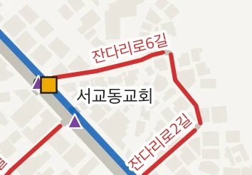
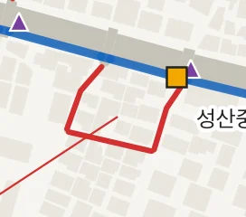
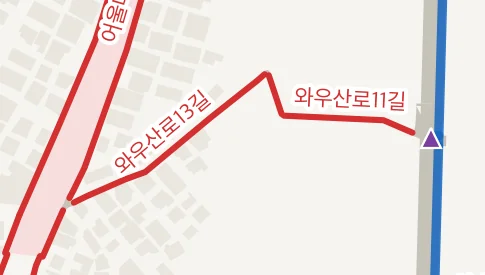
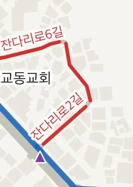
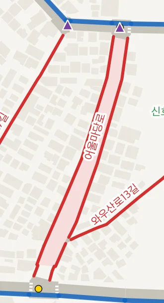

개요
연구 버스는 합정역에서 출발해 독막로를 따라 상수역까지 가고, 와우산로와 잔다리로를 지나 서교동사거리에서 양화로로 좌회전해 합정역으로 돌아온다. 경로 길이는 1,949m이고, 경로 위에 실제 위치의 가로변 정류장 6곳과 신호 없는 횡단보도 1곳이 있다.
목표는 버스가 한 바퀴를 도는 동안 연구할 상황을 최대한 자주, 실제와 같은 자리에서 만나게 하는 것이다.

도로
원본 도로망은 OpenStreetMap을 바탕으로 만들었다. 빌드 스크립트가 실제 지도와 대조해 고친 내용을 적용해 실행 도로망을 만든다. 같은 입력이면 같은 파일이 나온다.
제한속도는 안전속도 5030 기준이다. 간선은 시속 50km, 이름이 ~길인 이면도로는 시속 30km다. 버스는 길이 12m, 폭 2.5m, 가속 1.0m/s², 감속 2.0m/s²다.
여섯 시나리오
버스가 정류장을 오가며 만나는 상황을 여섯 가지로 나누고, 각 상황이 일어났는지 시뮬레이션 기록에서 판정한다.
| 번호 | 상황 | 판정 기준 |
|---|---|---|
| S1 | 정류장 출발 후 재합류 | 버스가 정류장 안에서 멈춤 |
| S2 | 정류장 직후 좌회전 차로 변경 | 다음 회전이 좌회전인 구간에서 왼쪽 차로로 옮김 |
| S3 | 정류장 접근 차로 변경 | 정류장 100m 앞에서 오른쪽으로 옮김 |
| S4 | 정류장 앞 정차 차량 | 50m 안에 정차한 택시 |
| S5 | 골목 차량 끼어들기 | 골목 합류점에서 나온 차가 15초 안에 버스 앞 50m 안으로 들어옴 |
| S6 | 신호 없는 횡단보도 | 50m 앞 횡단보도 위에 보행자 |

골목 지름길
골목이 없으면 버스 길로 나오는 골목 차가 거의 없어 끼어들기를 시험할 수 없다. 버스 경로 안쪽의 실제 골목 여덟 묶음을 살렸다. 아래 수치는 혼잡한 교통에서 버스가 160번 돈 결과다.

잔다리로6길
끼어들기 28번시간당 45대

잔다리로3길
끼어들기 21번시간당 19대

독막로6길 고리
끼어들기 14번시간당 47대

와우산로11길
끼어들기 3번시간당 50대

잔다리로2길
끼어들기 3번시간당 25대

독막로3길
끼어들기 3번시간당 18대

어울마당로
끼어들기 2번시간당 20대

독막로7길
끼어들기 0번시간당 25대
끼어들기는 서교동사거리 앞 잔다리로6길, 서교동교회 정류장 앞 잔다리로3길, 성산중학교 정류장 앞 독막로6길 고리에 몰린다.
주변 교통
버스 주변의 다른 차량과 보행자가 버스를 마주했을 때 어떻게 반응하는지 구현하고, 설정한 대로 나오는지 숫자로 확인한다. 배경 차량의 주행 모델은 Krauss 35%, IDM 30%, EIDM 20%, ACC 15%다.
| 이름 | 내용 |
|---|---|
| A1 | 버스가 차로를 바꾸려 하면 뒤차가 양보하거나 하지 않는다. 측정한 양보율은 양보형 0.785, 비양보형 0.155다. |
| S4 | 택시가 정류장 앞에 선다. |
| S5 | 골목 차량이 신호 없이 끼어든다. |
| S6 | 횡단보도 보행자. 버스가 느릴 때만 건너는 유형과 간격이 충분하면 건너는 유형이 있다. |
검증
도로를 바꿀 때마다 같은 방법으로 잰다. 300번 점검은 교통량 세 단계와 seed 100개로 배경 교통에 버스를 넣어 충돌, 순간이동, 비상 정지가 난 실행을 센다.
| 지표 | 값 |
|---|---|
| 300번 점검 중 사고·정체가 난 실행 | 6 |
| 버스 한 바퀴 평균 시간 | 444초 |
| 규칙 버스 완주 (80번씩 두 묶음) | 76, 79 |
| 도로 검증 (seed 3 × 교통량 3) | 9 / 9 완주 |
어울마당로를 독막로까지 이었을 때 버스가 한 바퀴에 17초 늦어졌다. 교차로 신호 주기가 90초에서 100초로 바뀌어 다음 교차로와 엇갈린 탓이었고, 신호를 90초로 고정해 원래 시간으로 돌렸다.
데이터와 학습
ego는 버스다. 수집기는 매 스텝 버스 상태, 주변 차량과 보행자, 경로, 신호를 기록한다. 컬럼은 표 하나에서 정의하고, 수업의 필수 항목 19개에 시각, 감지 보행자, 종료 사유, 승차감 4개를 더했다.
- 주변 차량과 보행자는 버스에서 150m 안만 적는다.
- 승차감 한계(가속 1.5m/s², jerk 2.0m/s³)를 넘은 스텝을 따로 표시한다.
한계와 다음 단계
- 버스는 아직 정류장에 서지 않고 거리만 기록한다.
- 정책 입력은 수업 원본의 31차원이라 보행자와 신호는 기록에만 있다.
- 양화로6길 서쪽은 입구에 횡단보도를 두면 사고 없이 이을 수 있어 확인 시험 뒤 넣는다.